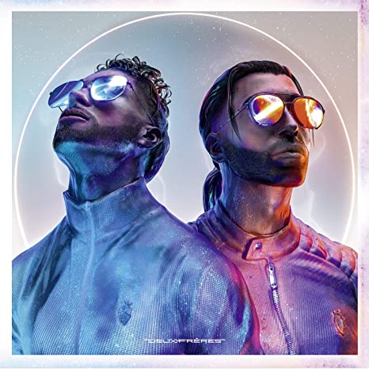

Ik ben 17 jaar oud. Mijn vader woont in Amsterdam(IJburg), en mijn moeder woont Amsterdam nieuw-west(Slotervaart).
Ik ben een heel groot fan van FC Barcelona en ik support ze ook al sinds ik wist wat voetbal was. Mijn lievelingsspeler is Riyad Mahrez en hij speelt bij Manchester City.
Verder luister ik veel naar Franse muziek. Zoals de artiesten Soolking, Heuss L'enfoie, Hornet La Frappe en PNL.
